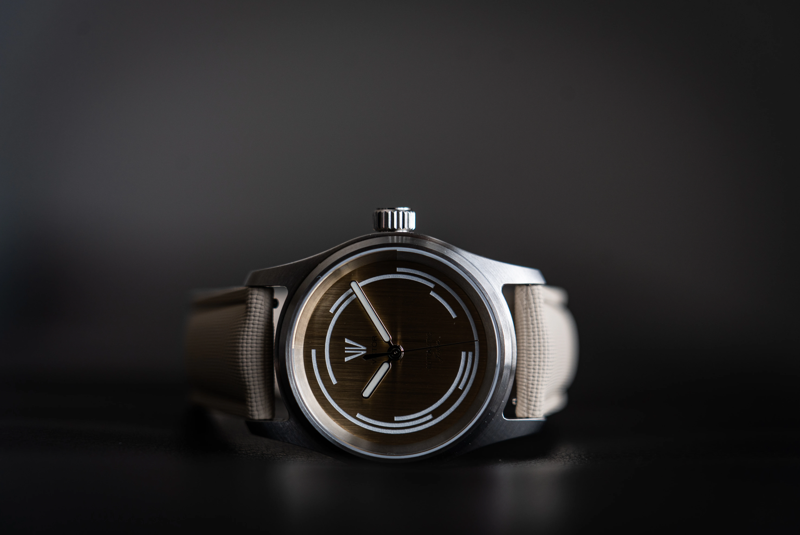
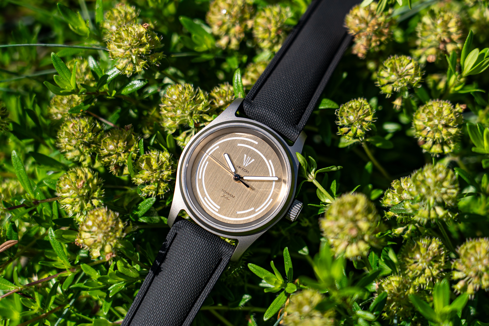
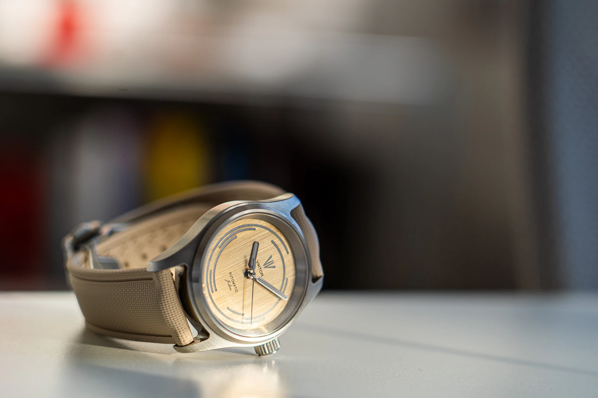

Archive
Finished Watches
A small record of releases, images, and details from the workshop.

Next model
Titanium Piece Unique
A special one-off titanium model.

Model 01
Jedan
The first completed Viktor Watch. The piece that proved the workshop, the process, and the standard could become something real.